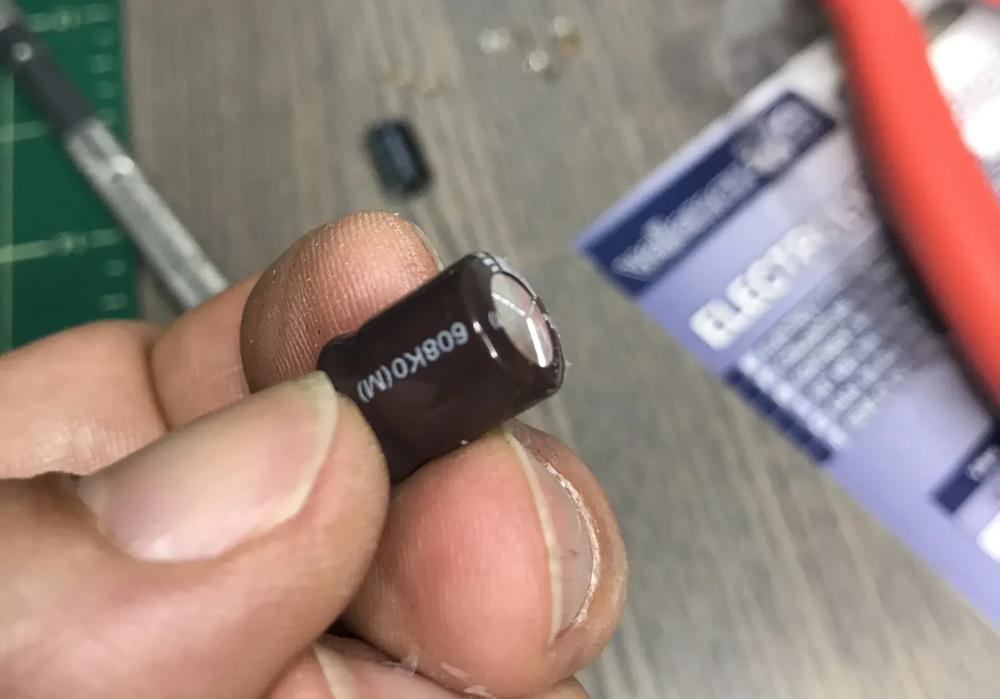
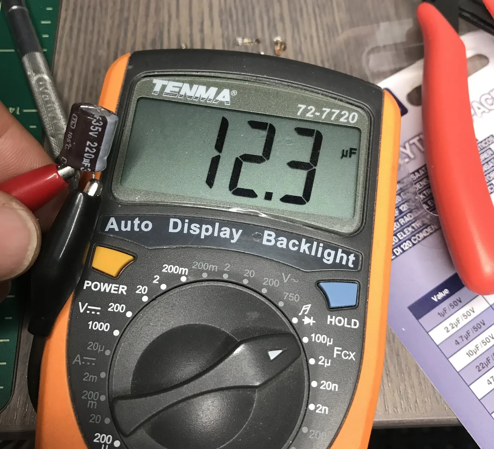

Repair: Bad Electrolytic Capacitor Strikes Again, This Time In A Refrigerator Control Unit
TLDR;
My Kitchen Aid model KBLC36FMS02 built-in refrigerator had been making odd sounds for a few weeks and then one day stopped cooling. I pulled the fridge out of its niche and eventually pulled out the control board on top of condenser coil. When I Googled some of the numbers on the PCB (ex: "W10219463 control board fix"), I came across the blog of Steve Jenkins, who had an excellent post on the control board issue with all the information I needed to repair it. The problem with my control board came down to a faulty 220uf electrolytic capacitor. And as I learned from my friend Josh when I repaired a 30-year old coffee maker, electrolytic capacitors always go bad.
Details
When my refrigerator, a Kitchen Aid model KBLC36FMS02 started making odd sounds, I ignored it. A few weeks later, when it stopped cooling, I couldn't ignore it.
My first thought was that the compressor had a leaked coolant and no longer worked. I pulled the refrigerator out of its niche and took apart the enclosure on top of the fridge which housed the compressor and condenser coil.
Before taking apart the top housing, I had unplugged the refrigerator. Since I didn't see anything obviously wrong with the compressor, I plugged the fridge back in to see if that might reset the temperature sensors. The compressor started up and I saw frost appear on the output tube, so I guessed that the compressor was working correctly.
Next I took a look at the condenser coils. I thought that maybe the refrigerator had turned itself off because, if the coils were sufficiently dirty, the fridge couldn't release heat. The coils were filthy, having never been cleaned in the 10 years since the fridge had been in operation.
 View full-size image
View full-size imageI cleaned out the coils and started up the fridge again, but it was clear after a few minutes that it still wasn't cooling. That's when I noticed that the condenser coil fan wasn't spinning. So, my next guess as to what was wrong with the fridge was that the control board, which I could see above the condenser coils, had a problem with it. I removed the board and took a look at it.
From my experience fixing a 30-year old coffee maker I learned that electrolytic capacitors often go bad. However, the capacitors on the board didn't look damaged or have any discharge like the ones I replaced in my old coffee maker.
I Googled the numbers on the PCB of the control board, hoping to find if I could find a replacement board and how much it would cost. Ebay had several services that would either sell you a new board ($850!!) or repair existing boards ($70-$200).
Then I came across Steve Jenkins' blog which had a post about the very control unit I was researching. Steve's post is excellent, with lots of useful information, including the fact that the failure condition I was experiencing is a well-known issue with the control board (model W10219463), and that two parts in particular fail on the board: a relay and an electrolytic capacitor.
From Steve's blog I learned that the single 200uf capacitor on the board is the one to go bad and when I looked at it again, I noticed that even though there was no discharge from the capacitor, its top was bulging, just like Steve described.


View full-size imageI removed the bad capacitor and tested it, confirming that it did not hold anywhere near the charge it was supposed to.


View full-size imageSo, I replaced the bad 220uf capacitor with a fresh one, reinstalled the control board and started up the refrigerator. The compressor went on as did the fan! After a few minutes I confirmed that the fridge was cooling again.
7 comments
Comments are closed. These were left on the previous version of this site. Questions? Get in touch.
Same capacitor went bad in my KitchenAid side-by-side built in refrigerator. My symptoms were the display inside the frig that shows the actual temp and set temp would not stay on. On power-up, all the display lights would flash on for a few seconds then turn off. Replacing the 220uf cap on the control board solved the problem. Thanks for taking the time to write this up. It was helpful.
I'm glad my post helped you resolve the problem with your refrigerator, and thank you for taking the time to post a comment.
Same problem happened with my Kitchenaid side by side. My fridge started beeping occasionally and ultimately the compressor started to cut out intermittently. Thanks to you and Steve Jenkins I was able to identify that the same capacitor on the control board had failed. I was a bit intimidated by the delicate soldering so I took mine to a computer repair shop. 30 minutes and $30 later - problem is fixed. Fridge is running like new.
Hi Federico,
I think I am experiencing the same problem, may I ask where did you buy the new capacitor?
Hi Evelyn,
I had spare capacitors from other projects. However, you can buy capacitors online.
Thank you very much for the post! Exactly the same happened to my Kitchenaid side-by-side KSSC42FTS03 model. Chirping sound, identified the same bulging capacitor. Fortunately, I have an elderly friend, who knows what hot iron and soldering is and he had the needed capacitor (replaced the bad one with 220nF, 50V, 105C).
Great, helpful post. Thank again.
You're welcome! Glad you found the post useful.